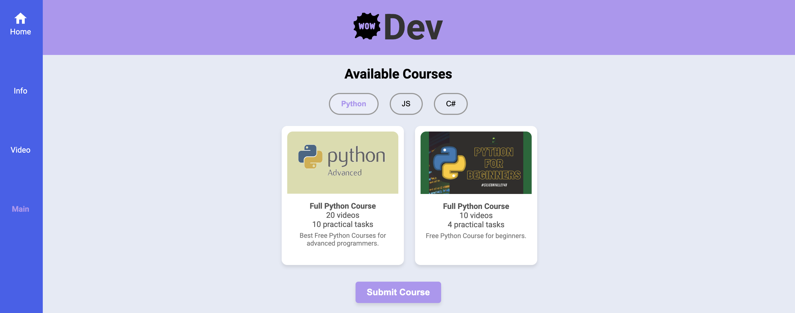

Зовнішній вигляд макету та його особливості

1. Гумова верстка
/* Приклад гумової верстки */
main {
padding: 2rem;
max-width: 1200px;
margin: 0 auto;
}
2. Використання Flexbox
.container {
display: flex;
flex-wrap: nowrap;
width: 100%;
min-height: calc(100vh - 4em);
}
Завдання 2.Варіант 2.Засобами HTML та CSS виконати Завдання №2, в саме: створити окремі веб-сторінки, а саме:
o Фіксована таблична верстка
o Гумова таблична верстка
2.2 Гумова блокова верстка
<!DOCTYPE html>
<html lang="uk">
<head>
<meta charset="UTF-8">
<meta name="viewport" content="width=device-width, initial-scale=1.0">
<title>Гумова блокова верстка</title>
<style>
.container {
width: 70%; /* Ширина контейнера адаптується до екрану */
display: flex;
justify-content: space-between;
flex-wrap: wrap;
}
.box {
width: 20%;
height: 200px;
background-color: #107a90;
text-align: center;
padding: 20px;
box-sizing: border-box;
margin-bottom: 20px;
}
</style>
</head>
<body>
<h1>Гумові блоки</h1>
<div class="container">
<div class="box">Блок 1</div>
<div class="box">Блок 2</div>
<div class="box">Блок 3</div>
<div class="box">Блок 4</div>
</div>
</body>
</html>
Завдання 2. Варіант 3
<!DOCTYPE html>
<html lang="uk">
<head>
<meta charset="UTF-8">
<meta name="viewport" content="width=device-width, initial-scale=1.0">
<title>Макет: Варіант 2</title>
<style>
body {
margin: 0;
font-family: Arial, sans-serif;
}
.container {
width: 100%;
max-width: 1200px;
margin: 0 auto;
overflow: hidden; /* Забезпечує коректне відображення плаваючих блоків */
}
/* Верхній блок */
.header {
background-color: #ffc107; /* Жовтий фон */
height: 100px;
line-height: 100px; /* Вертикальне вирівнювання тексту */
text-align: center; /* Центрування тексту */
font-size: 24px;
font-weight: bold;
}
/* Ліва панель */
.left-sidebar {
background-color: #007bff; /* Синій фон */
width: 20%; /* Ширина 20% від контейнера */
float: left; /* Використання float для розташування */
height: 400px;
color: white;
text-align: center;
padding-top: 20px; /* Відступ зверху для тексту */
}
/* Центральний блок */
.main-content {
background-color: #ffffff; /* Білий фон */
width: 40%; /* Ширина 40% від контейнера */
float: left; /* Використання float для розташування */
height: auto; /* Висота залежить від вмісту */
border: 1px solid #ddd; /* Сіра рамка */
box-sizing: border-box;
padding: 20px;
position: relative;
}
/* Права панель */
.right-sidebar {
background-color: #007bff; /* Синій фон */
width: 20%; /* Ширина 20% від контейнера */
float: left; /* Використання float для розташування */
height: 400px;
color: white;
text-align: center;
padding-top: 20px; /* Відступ зверху для тексту */
}
/* Нижній блок */
.footer {
background-color: #ffc107; /* Жовтий фон */
height: 100px;
clear: both; /* Забезпечує, що цей блок відображається під усіма float */
text-align: center; /* Центрування тексту */
line-height: 100px;
font-size: 20px;
font-weight: bold;
}
/* Червоний блок у Центрі */
.top-bar {
background-color: #dc3545; /* Червоний фон */
height: 50px;
width: 90%; /* Займає 90% ширини центрального блоку */
margin: 0 auto;
text-align: center; /* Центрування тексту */
color: white;
line-height: 50px;
margin-bottom: 20px; /* Відступ знизу */
}
/* Червоний блок під центральним контентом */
.bottom-bar {
background-color: #dc3545; /* Червоний фон */
height: 50px;
width: 90%; /* Займає 90% ширини центрального блоку */
margin: 20px ; /* Відступ знизу */
text-align: center; /* Центрування тексту */
color: white;
line-height: 50px;
}
</style>
</head>
<body>
<div class="container">
<!-- Верхній блок -->
<div class="header">1. Верхній блок: заголовок сторінки</div>
<!-- Ліва панель -->
<div class="left-sidebar">2. Ліва панель: додаткове меню</div>
<!-- Центральний блок -->
<div class="main-content">
<div class="top-bar">Червоний блок: важлива інформація</div>
3. Центральний блок: основний контент сторінки
<div class="bottom-bar">Червоний блок внизу</div>
</div>
<!-- Права панель -->
<div class="right-sidebar">4. Права панель: додаткові функції</div>
<!-- Нижній блок -->
<div class="footer">5. Нижній блок: підвал сторінки</div>
</div>
</body>
</html>
Підсумки
Переваги таблиць
- Легкість у використанні для табличних даних
- Ясна структура та форматування
- Широка підтримка у всіх браузерах
Переваги блоків
- Гнучкість у створенні дизайнів
- Адаптація до різних пристроїв
- Сучасний підхід у веб-розробці
Завдання 3. Варіант 2. Виконати Завдання, використовуючи засоби CSS та FLEXBOX
<head>
<meta charset="UTF-8">
<meta name="viewport" content="width=device-width, initial-scale=1.0">
<title>Flexbox Layout Example</title>
<style>
body {
margin: 0;
font-family: Arial, sans-serif;
}
header, footer {
background-color: #333;
color: white;
text-align: center;
padding: 1em;
}
.container {
display: flex;
flex-wrap: nowrap;
width: 100%;
min-height: calc(100vh - 4em);
}
.sidebar {
width: 20%;
background-color: #f4f4f4;
padding: 1em;
box-sizing: border-box;
}
.content {
width: 80%;
padding: 1em;
box-sizing: border-box;
}
.section {
margin-bottom: 1em;
padding: 1em;
background-color: #e9e9e9;
}
.horizontal-sections {
display: flex;
gap: 1em;
}
.horizontal-sections .section {
flex: 1;
}
</style>
</head>
<body>
<header>
<h1>Website Header</h1>
</header>
<div class="container">
<aside class="sidebar">
<h2>Sidebar</h2>
<p>Navigation links or additional info here.</p>
</aside>
<main class="content">
<div class="section">
<h2>Section Header</h2>
<p>This is the header section content.</p>
</div>
<div class="horizontal-sections">
<div class="section">
<h2>Section 1</h2>
<p>This is the first section content.</p>
</div>
<div class="section">
<h2>Section 2</h2>
<p>This is the second section content.</p>
</div>
</div>
</main>
</div>
<footer>
<p>Website Footer</p>
</footer>
</body>
Підсумки
Створення цього вебсайту за допомогою HTML та CSS ілюструє основні
принципи та
техніки сучасної веб-розробки. Головною складовою є застосування
семантичної розмітки HTML для організації контенту та адаптивного стилювання CSS, що
дозволяє
розробити зручний, естетично привабливий і ефективний інтерфейс.
- Застосування Flexbox для гнучкого розміщення елементів, що гарантує коректне
відображення на різних пристроях.
- Інтеграція стильного дизайну з напівпрозорими елементами, що додають візуального об'єму.
- Організація коду з урахуванням принципів DRY (Don't Repeat Yourself) для зручності
обслуговування та масштабування.
- Розподіл стилів на загальні та специфічні для кожної частини сайту для поліпшення читабельності та повторного
використання.
- Створення випадаючих меню для покращення навігації.
Сайт відповідає основним принципам веб-розробки, серед яких адаптивність, доступність,
зручність для користувачів, і може слугувати основою для подальших удосконалень.
Контрольні питання
1. Три базові концепції верстки за допомогою CSS
Блоки (Box Model): Усі елементи веб-сторінки можна розглядати як блоки, що складаються з контенту, внутрішніх відступів (padding), рамок (border) і зовнішніх відступів (margin).
Позиціонування (Positioning): Позиціонування визначає, де елемент має бути розташований на сторінці, за допомогою різних методів: static (за замовчуванням), relative, absolute, fixed, sticky.
Флексбокси та гріди (Flexbox і Grid): Ці технології дозволяють створювати складні макети, використовуючи гнучкі контейнери і сітки для управління елементами на сторінці.
2. Фіксований тип макетів веб-сторінок
Визначення: Це тип макету, де елементи мають фіксовані розміри, і їх положення на сторінці не залежить від розміру вікна браузера чи пристрою.
Переваги: Легко реалізувати, елементи завжди мають однаковий вигляд, не змінюються при зміні розміру вікна.
Недоліки: Не підходить для мобільних пристроїв, оскільки не адаптується до різних розмірів екранів.
3. Гумовий тип макетів веб-сторінок
Визначення: Макет, де елементи використовують відсоткові значення для ширини чи висоти, що дозволяє їм змінюватися в залежності від розміру екрану.
Переваги: Макет адаптується до різних екранів, зручний для використання на мобільних пристроях.
Недоліки: Може бути складно передбачити точний вигляд елементів, особливо якщо контент має різну довжину.
4. Еластичний тип макетів веб-сторінок
Визначення: Це макет, де елементи використовують одиниці вимірювання типу em або rem, які змінюються залежно від розміру шрифтів.
Переваги: Підлаштовується під зміни шрифтів та інших налаштувань користувача, забезпечуючи більшу гнучкість.
Недоліки: Може бути важким у налаштуванні, особливо якщо потрібно досягти точності в макеті.
5. Адаптивний тип макетів веб-сторінок
Визначення: Макет, що змінює свою структуру залежно від розміру екрана за допомогою медіа-запитів.
Переваги: Створює оптимальний вигляд на різних пристроях, зокрема на мобільних телефонах і планшетах.
Недоліки: Потребує більше часу на налаштування та тестування для різних розмірів екранів.
6. Комбіновані типи макетів веб-сторінок
Визначення: Комбінація кількох типів макетів (фіксованих, гумових, еластичних та адаптивних), що дозволяє досягти більшої гнучкості та контролю.
Переваги: Дозволяє використовувати різні підходи для різних частин сторінки, забезпечуючи гарний вигляд на різних пристроях.
Недоліки: Складність у реалізації та обслуговуванні, може вимагати великої кількості тестування.
7. Як створити веб-сторінку за допомогою таблиці
Щоб створити веб-сторінку за допомогою таблиць, ви можете використати HTML для визначення таблиці та її рядків і клітинок. Кожен рядок створюється за допомогою елементів <tr>, а кожна клітинка — за допомогою елементів <td>. CSS використовується для надання таблиці стилів, таких як ширина, висота, рамки та відступи. Цей підхід часто використовується для простих макетів.
8. Як створити веб-сторінку за допомогою плаваючих блоків
Для створення макету за допомогою плаваючих блоків використовуються властивості CSS float. Кожен блок з плаваючим вмістом розміщується в залежності від інших елементів. Це дозволяє створювати сторінки, де елементи "плавають" один поряд з іншим, наприклад, текст може оточувати зображення чи інші елементи. Після того як елементи "плавають", часто використовують властивість clear для уникнення накладення елементів.